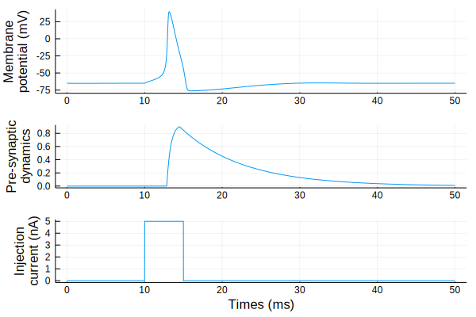

3.1. Hodgkin-Huxleyモデルとシナプスモデル¶
\(r_{j}\)を\(j\)番目のニューロンのpre-synaptic dynamicsとすると、\(r_{j}\)は次式に従う。
\[
\frac{\mathrm{d} r_{j}}{\mathrm{d} t}=\left(\frac{1}{\tau_{r}}-\frac{1}{\tau_{d}}\right) \frac{1-r_{j}}{1+\exp \left(-V_{j}+V_{0}\right)}-\frac{r_{j}}{\tau_{d}}
\]
ただし、時定数 \(\tau_r=0.5, \tau_d = 8\) (ms), 反転電位 \(V_0 = -20\) (mV)とする。前節で既に\(r\)の描画は行ったが、パルス波を印加した場合の挙動を確認する。
using Plots
using Base: @kwdef
using Parameters: @unpack # or using UnPack
@kwdef struct HHParameter{FT}
Cm::FT = 1.0 # 膜容量(uF/cm^2)
gNa::FT = 120.0 # Na+ の最大コンダクタンス(mS/cm^2)
gK::FT = 36.0 # K+ の最大コンダクタンス(mS/cm^2)
gL::FT = 0.3 # 漏れイオンの最大コンダクタンス(mS/cm^2)
ENa::FT = 50.0 # Na+ の平衡電位(mV)
EK::FT = -77.0 # K+ の平衡電位(mV)
EL::FT = -54.387 #漏れイオンの平衡電位(mV)
tr::FT = 0.5 # ms
td::FT = 8.0 # ms
invtr::FT = 1.0 / tr
invtd::FT = 1.0 / td
v0::FT = -20.0 # mV
end
@kwdef mutable struct HH{FT}
param::HHParameter = HHParameter{FT}()
N::Int32
v::Vector{FT} = fill(-65.0, N)
m::Vector{FT} = fill(0.05, N)
h::Vector{FT} = fill(0.6, N)
n::Vector{FT} = fill(0.32, N)
r::Vector{FT} = zeros(N)
end
function updateHH!(variable::HH, param::HHParameter, I::Vector, dt)
@unpack N, v, m, h, n, r = variable
@unpack Cm, gNa, gK, gL, ENa, EK, EL, tr, td, invtr, invtd, v0= param
@inbounds for i = 1:N
m[i] += dt * ((0.1(v[i]+40.0)/(1.0 - exp(-0.1(v[i]+40.0))))*(1.0 - m[i]) - 4.0exp(-(v[i]+65.0) / 18.0)*m[i])
h[i] += dt * ((0.07exp(-0.05(v[i]+65.0)))*(1.0 - h[i]) - 1.0/(1.0 + exp(-0.1(v[i]+35.0)))*h[i])
n[i] += dt * ((0.01(v[i]+55.0)/(1.0 - exp(-0.1(v[i]+55.0))))*(1.0 - n[i]) - (0.125exp(-0.0125(v[i]+65)))*n[i])
v[i] += dt / Cm * (I[i] - gNa * m[i]^3 * h[i] * (v[i] - ENa) - gK * n[i]^4 * (v[i] - EK) - gL * (v[i] - EL))
r[i] += dt * ((invtr - invtd) * (1.0 - r[i])/(1.0 + exp(-v[i] + v0)) - r[i] * invtd)
end
end
updateHH! (generic function with 1 method)
シミュレーションを実行する。
T = 50 # ms
dt = 0.01f0 # ms
nt = Int32(T/dt) # number of timesteps
N = 1 # ニューロンの数
# 入力刺激
t = Array{Float32}(1:nt)*dt
I = repeat(5f0 * ((t .> 10) - (t .> 15)), 1, N) # injection current
# 記録用
varr = zeros(Float32, nt, N)
rarr = zeros(Float32, nt, N)
# modelの定義
neurons = HH{Float32}(N=N)
# simulation
@time for i = 1:nt
updateHH!(neurons, neurons.param, I[i, :], dt)
varr[i, :] = neurons.v
rarr[i, :] = neurons.r
end
0.108664 seconds (481.58 k allocations: 23.462 MiB)
描画してみる。
p1 = plot(t, varr[:, 1])
p2 = plot(t, rarr[:, 1])
p3 = plot(t, I[:, 1])
plot(p1, p2, p3,
xlabel = ["" "" "Times (ms)"],
ylabel= ["Membrane\n potential (mV)" "Pre-synaptic\n dynamics" "Injection\n current (nA)"],
layout = grid(3, 1, heights=[0.4, 0.3, 0.3]), legend = false)
